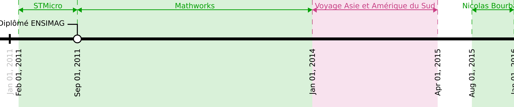
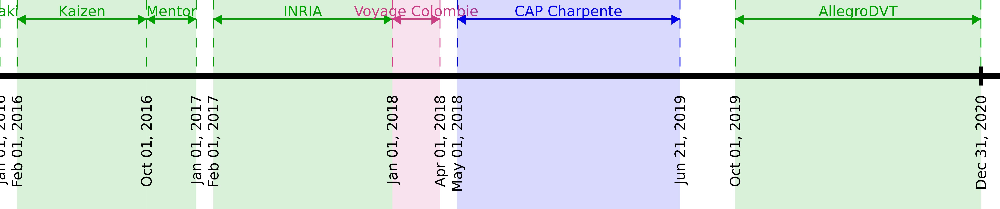

|
De nouveaux challenges techniques et des solutions qui s'inscrivent dans ma façon de développer (Keep It Simple, Stupid), avec un outillage digne de notre temps (et la ligne de commande en fait partie intégrante!). Le tout à partager avec une équipe pour qui ces problématiques sont présentes, et qui a un certain goût pour la philosophie Unix, l'automatisation des outils et la qualité.
J'ai également un attrait particulier pour les problématiques de bas niveau, et les systèmes complexes nécessitant de la performance et de la robustesse.
Mon langage de prédilection est le C++ moderne.
| 2008 - 2011: | Cycle ingénieur Filière Ingénierie des Systèmes d’Information (Mention B) au sein de l'école GrenobleINP Ensimag |
|---|---|
| 2006 - 2008: | Licence Sciences et Technologies Informatique et Mathématiques (Mention TB) à l'Université Joseph Fourier de Grenoble |
| 2006: | Baccalauréat Scientifique (Mention AB) au Lycée Paul Héroult à St Jean de Maurienne |
| Langages (maîtrisés): | |
|---|---|
D, C++(17), C(99), Bash, CUDA(7)/OpenCL(1.2), reStructuredText (documentation) |
|
| Langages (survolés): | |
Python(3), Rust, asm x86 |
|
| Librairies C++: | STL, Boost (algorithmes, conteneurs, Asio, Test), Qt |
| Atouts: | Architecture, algorithmes, système, gestion mémoire, programmation parallèle, performance, gpgpu, automatisation, build, intégration continue |
| Systèmes: | Unix (Linux - Debian/Slackware, BSD - FreeBSD), Windows (7, 10) Bonnes connaissances en administration de machines tournant sous ces systèmes. Je peux installer et configurer les outils cités ci-dessous. |
| Outils (env): | Bash, Tmux, AwesomeWM, Docker |
| Outils (dev): | Vim, Git, GNU toolchain, GNU coreutils, Clang, Meson |
| Outils (équipe): | |
Redmine, Gitlab, Jenkins CI, CGit |
|
| Langues: | Anglais parlé et écrit couramment (TOEIC: 925/990). Espagnol parlé couramment. |


| Depuis Octobre 2019: | |
|---|---|
Ingénieur R&D chez AllegroDVT. Génération de streams de conformité sur les nouveaux standards vidéos (H.266/VVC). Design et développement de nouveaux générateurs vidéos (orientés grammaire). Contribution aux standards vidéos (implémentation de référence, spécification). Introduction, formation, développement et maintenance des outils de travail de l'équipe pour permettre l'intégration continue (Utilisation de git/meson/jenkins). Création d'un environnement reproductible (basé sur docker) pour abstraire les machines des développeurs. Utilisation du D, C++17, Bash. Travail sous Linux uniquement. |
|
| Mai 2018 - Juin 2019: | |
|---|---|
CAP Charpente, à la Fédération compagnonnique de Grenoble. Préparation du projet avec Pôle Emploi, réalisation de 3 stages d'immersion d'un mois, puis le CAP, comprenant 2 stages d'un mois. Ce CAP a été l'occasion d'apprendre un métier manuel, désir que j'avais depuis longtemps, et d'en découvrir les avantages et les inconvénients comparé à mon métier d'ingénieur. C'était une expérience importante pour ma vie professionnelle. |
|
| Janvier - Mars 2018: | |
|---|---|
Voyage en Colombie de 3 mois. Découverte d'un bien beau pays que j'avais envie d'explorer depuis longtemps. L'occasion de connaître plus de la culture latine, de perfectionner mon espagnol, et aussi, de faire un point dans ma vie. |
|
| Février - Décembre 2017: | |
|---|---|
Ingénieur de recherche en CDD chez INRIA à Grenoble, au sein de l'équipe CORSE, travaillant sur des problématiques de compilation et d'optimisation de programmes. Extension de GDB (via Python) pour ajouter la possibilité de contrôler des plugins d'instrumentation QEMU via l'interface gdbserver. Développement d'un outil d'aide à l'analyse de performances (profiling) par instrumentation binaire basé sur QEMU, nommé program profiler (pp). Travail sur les projets QEMU et DynamoRIO (code disponible sur mon github) Utilisation du C++14, Python. |
|
| Octobre 2016 - Janvier 2017: | |
|---|---|
Ingénieur R&D chez Mentor Graphics à Montbonnot. Développement d'un simulateur de circuits électroniques. J'ai mis fin à ma période d'essai car le poste ne correspondait pas à mes attentes. Utilisation du C++14, Bash, Boost, CMake. |
|
| Février - Octobre 2016: | |
|---|---|
Ingénieur R&D chez Kaizen Solutions en prestation chez Thales Electron Devices à Moirans. Développeur (seul) sur un projet de R&D visant à porter une chaîne de traitement d'images sur GPGPU (via CUDA/OpenCL). L'enjeu est de réduire la consommation de l'unité de traitement. Plusieurs boards ont été évaluées (principalement à base de processeurs ARM et de différents GPGPU (DSP, GPU)). Une partie importante du travail a été d'optimiser le code. Écriture d'algorithmes de traitement d'images (portage depuis une version CPU ou de spécifications). Portage de CUDA vers OpenCL (à performance égale sur les plateformes offrant les deux) avec une solution technique garantissant l'utilisation du même code (via des macros - dans le style de Boost.Compute). Code de communication réseau pour la transmission d'images. Mise en place de chaînes de cross compilation, d'un script de build, de déploiement, de test et de profiling. Autoformation CUDA/OpenCL et sur les problématiques de programmation sur GPGPU. Utilisation du C++14, Cuda(7), OpenCL(1.2), Bash, Boost (Asio), SDL, CMake. Travail sous Linux uniquement. Développement x86_64, arm, et arm64. |
|
| Août 2015 - Janvier 2016: | |
|---|---|
Ingénieur au Centre de Recherche et Développement Nicolas Bourbaki à Montbonnot-Saint-Martin. Développeur sur le projet SpherNet, visant à offrir une solution de communication complète pour les objets connectés (réseau LoRa). Équipe de 6 personnes, et projet partant d'une feuille blanche. Architecture de notre solution, choix des technologies utilisées, conseils techniques à l'équipe, le tout sur fond de C++ moderne (14). Développement sur toutes les parties du projet. Mise en place d'outils pour l'équipe (intégration continue, revue de code), de coding style et d'un workflow de travail. Création d'un environnement de développement reproductible basé sur Debian. Utilisation du C++14, Bash, Boost (Asio, Log, UnitTest), programmation asynchrone (Proactor Pattern). Travail sous Linux uniquement. Licenciement économique suite à une liquidation totale de l'entreprise. |
|
| Janvier 2014 - Mars 2015: | |
|---|---|
Voyage en Asie et en Amérique du Sud: Inde, Cambodge, Laos, Vietnam, Philippines, Singapour, Malaisie, Thaïlande, Népal, passage par la France, Brésil, Bolivie, Pérou et Équateur. Des rencontres fantastiques, un monde complètement différent, une Nature exceptionnelle et une vision à jamais changée sur la vie, mon pays et tout ce qui m'entoure. |
|
| Septembre 2011 - Janvier 2014: | |
|---|---|
Ingénieur compilation chez MathWorks (qui produit MATLAB) à Montbonnot-Saint-Martin. Evolution de l’analyseur statique de code C/C++ Polyspace. Travail sur le front-end (compilation) et l’architecture des produits Polyspace (Bug Finder et Code Prover). Création d'un outil de configuration automatique basé sur de l'injection de code lors du build du client (via LD_PRELOAD sous Linux/MacOS et IAT patching sous Windows). Cela a permis le déploiement de Polyspace dans tout MathWorks ainsi que chez de nombreux clients. Une configuration manuelle pouvait nécessiter plusieurs heures et ne garantissait pas un résultat toujours fiable dans ce qui est compilé. Mise en place seul de Git et d'intégration continue au sein de l’équipe suite à une initiative personnelle. Détection automatique de nouveaux bugs (grâce à l'utilisation scriptée de git bisect) et productivité améliorée pour tous. Outils utilisés en complément des officiels fournis par l'entreprise. Utilisation du Standard ML, C99, C++11, Bash, de Boost, de la WinAPI et de beaucoup de librairies internes sur du code de plusieurs centaines de milliers de lignes. Travail multiplateforme Windows/Linux/MacOS en 32/64 bits. Anglais utilisé au quotidien. |
|
| Février - Août 2011: | |
|---|---|
Stage de fin d’études Ensimag au sein de l'équipe compilation de STMicroelectronics à Grenoble. Réalisation d’un logiciel permettant d’analyser la structure de grands projets (Linux, LLVM, ...) au niveau binaire afin d’aider les développeurs à comprendre et modifier ceux-ci. Utilisation du C99, XML et de la libelf et libdwarf. |
|
| Juillet - Août 2010: | |
|---|---|
Stage de fin de deuxième année Ensimag chez Aesculap à Échirolles. Conception, implémentation et validation d’un module de reconnaissance vocale pour un système de chirurgie assistée par ordinateur (Orthopilot). Tests réalisés en conditions réelles durant deux opérations au CHU de la Tronche. Utilisation du C++03, de la Microsoft SpeechAPI et du framework Qt. |
|
| 2007 - 2010: | Vendeur cycles chez Decathlon à La Tronche. (10h/sem période scolaire - 35h/sem été). Une première expérience du commerce qui m'a appris beaucoup en complément de mes études. |
|---|